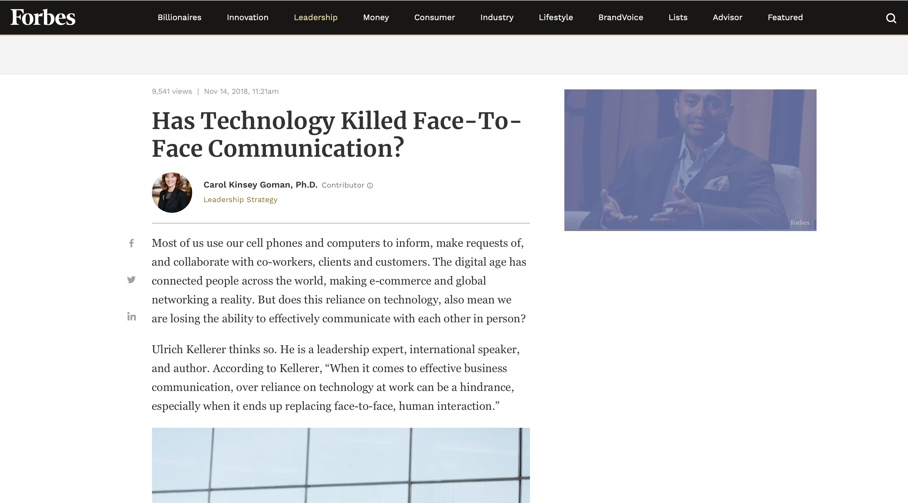

Wifi enables users to connect easily to the internet, allowing seamless communication amongst users on multiple applications. This person is on her phone at the airport, most likely using the internet to communicate to the person meeting her at her destination.
Social interaction is critical for both mental and physical health, yet the Internet enables people to constantly be preoccupied on their phones, connecting to others through wifi and mobile data. As we can see, both people are preoccupied by what is going on in their phone, disregarding the opportunity to interact face-to-face with each other.
Forbes addressed the issue of technology and its serious impacts on face-to-face communication in an article written in 2018. They interviewed Ulrich Kellerer who is a leadership expert, international speaker, and author.
Follow this link to read the full article